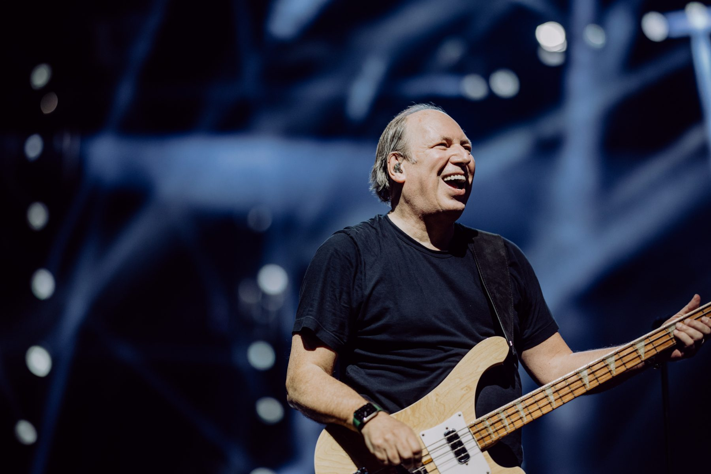

Halldór Óli Arnarson
nemandi
Tækniskólinn
Hans Zimmer
Hans Zimmer fæddur 1957 í frankfurt þýskalandi. Áhugi hanns á tónlist byrjaði Heima hjá sér þegar mamma hanns var að kenna honum píanó. Í Únglins árum hanns flutti hann til london Og fór í Hurtwood House school. á árum hanns i london var hann undir sterkum áhrifum frá kvikmyndum Ennio Morricone og Once Upon a Time in the West þessar myndir kveiktu áhrif hanns i kvikmyndar tónlist. 1977 Gerði hann Fyrsta verk hanns var með Tónlistar hópnum 1 Bugglesmeð 2 Horn Geoff Downes og Bruce Woolley má sjá stuttlega í tónlistarmyndbandi Buggles við lagið frá 1979 Video Killed The radio Star eftir hann vann með buggles for hann að vinna með ítalska hópnum Krisma bandið var búið til 1976 með Maurizio Arcieri og Christina moser. Hann var þekktur hljóðgervill fyrir þriðju plötu Krisma Cathode Mamma hann vann líka með bandinu Helden. Honum var boðið í spænska bandið Mecano og flutti framm i beinni í segovia Spáni í 1984. Tímamót á ferli Zimmer urðu 1988 þegar hann gerði tónlistina fyrir myndina rain man hollywood leikstjóri barry Levinson var að leita af einhverjum til að gera tónlinstina fyrir rainman heyrði konan hanns soundtrackið af anti-apartheid drama a world apart sem zimmer hafði gert soundtrackið fyrir. Levinsson var heillaður af tónlista hæfileikum Zimmers og gaf honnum vinnuna fyrir Rainman. þannig byrjaði ferilinn hanns Hans Zimmers.

Hans Zimmer Á tónleikum í Englandi

Hans Zimmer að spila a Golden Globe
Bönd
The Buggles var ensk nýbylgjuhljómsveit stofnuð í London árið 1977 af söngvaranum og bassaleikaranum Trevor Horn og hljómborðsleikaranum Geoff Downes. Þeir eru þekktastir fyrir fyrstu plötu sína „Video Killed the Radio Star“ árið 1979, sem náði efsta sæti breska smáskífulistans og náði fyrsta sæti í 15 öðrum löndum og var valið sem lagið til að hleypa af stokkunum MTV árið 1981.
meðlimar
- trevor horn
- Geoff Downes
- Hans Zimmer
Lög
- Video Killed the Radio Star
- Astroboy
- kid dynamo